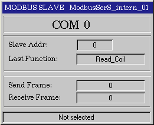
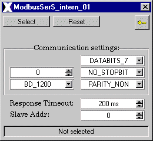

| Serial Modbus Slave |
The Modbus Slave symbol communicates with a Modbus Master.
Features | Installation | User Interface | Configuration | Implementation Notes | Modifications History
The ModbusSerS class is comprised of the following
components (files):
| Class Component | Description | File Name(s) |
| Class File | Includes the process picture representation and any popup menus. | ModbusSerS.symbol
|
| Graphic Files | Class Specific Graphic Files for documentation. | ModbusSerS.gif
ModbusSerS_OperatorPopup.gif |
| HTML-Document | HTML document for Online Help. | ModbusSerS.htm |
| Enum-File | Enumerator file | ModbusSerS.enum |
Installation: The
above listed files must be copied into a common sub-directory within the
project's "classlib" directory. The name of the common directory can be
chosen freely.
Features | Installation | User Interface | Configuration | Implementation Notes |Modifications History
The ModbusSerS class represents an actual Slave module. The instance name of the module will appear in white text on the top right of the symbol. The title will change from green to flashing red if an error occurs.
The symbol is divided into four sections:
1. Port number
2. Slave
Information
The Modbus Slave address and the last requested function.
3. Frame
counts
Number of sent and received frames.
4. State
string
Informational string.

Figure 1: Graphical Representation
The PopUp is invoked by selecting the graphical representation. It shows the communication settings and the actual client. To activate the symbol the Select button must be on. On the top of the PopUp the communication settings are displayed.

Figure 2: The communication PopUp
Features | Installation | User Interface | Configuration | Implementation Notes | Modifications History
The following table lists the configuration parameters
for the ModbusSerS symbol. The parameter data type, the default values
and a brief description are listed. The grey shaded rows are parameters
which must not be changed.
| Item | Variable | Type | Default | Description |
| 1 | com_port | USINT | 0 | Port |
| 2 | baudrate | Baudrate_Serial | BD_1200 | Baudrate |
| 3 | databits | Databits_Serial | DATABITS_8 | Databits |
| 4 | stopbits | Stopbits_Serial | NO_STOPBIT | Stopbit |
| 5 | parity | Parity_Serial | PARITY_NON | Parity |
| 6 | communication | CommType | NO_COMM | Informational communication enumerator |
| 7 | response_timeout | UINT | 200 | Response timeout |
| 8 | select | BOOL | False | Symbol select |
| 9 | reset | BOOL | False | Resets
the communication
and the symbol |
| 10 | state | USINT | 0 | State of communication |
| 11 | state_string | STRING | Not selected | State string of communication |
| 12 | slave_address | USINT | 0 | Modbus Slave address |
| 13 | requested_function | MB_Function | Read_Coil | Last requested Modbus funtcion from MB Master |
| 14 | send_frame | UDINT | 0 | Send frame counter |
| 15 | receive_frame | UDINT | 0 | Receive frame counter |
| 16 | data | UINT | 0 | Slave
data array.
All slave data is stored in this array. |
| 17 | error | ALARM | False | Error var |
| 18 | lock_edit_comm_settings | BOOL | False | Locks the communication settings in the PopUp |
| 19 | local_struct | POINTER | Internal pointer for the local structure | |
| 20 | SPS_CycleSlow | code | ||
| 21 | SPS_Cycle | code | Run the AXX function |
The Modbus Slave data array:
Coils:
From data[0] - data[63] = 64 words = 64 * 16 = 1024 coils
The coils are bit coded. In one word there are 16 coils.
As example:
data[0] = 500dez = 111110100bin = coil 1(OFF), coil 2(OFF), coil
3(ON), coil 4(OFF), coil 5 -coil 9 (ON) coil 10 - coil 16 (OFF)
Inputs:
From data[64] - data[127] = 64 words = 64 * 16 = 1024 inputs
The inputs are bit coded as the coils.
Output(Hold) registers:
From data[128] - data[255] = 128 words = 128 output registers
Input registers :
From data[256] - data[383] = 128 words = 128 input registers
Features | Installation | User Interface | Configuration | Implementation Notes |Modifications History
Data Transfer will only work when the communication settings are correct.
Features | Installation | User Interface | Configuration | Implementation Notes | Modifications History
The following table lists the modifications made
to the ModbusSerS class.
| Item | Date
(m/d/y) |
Name | File | Description | Reason |
| 1 | 20/06/00 | Andreas Nebenführ | Initial Design | ||
Features | Installation | User Interface | Configuration | Implementation Notes |Modifications History